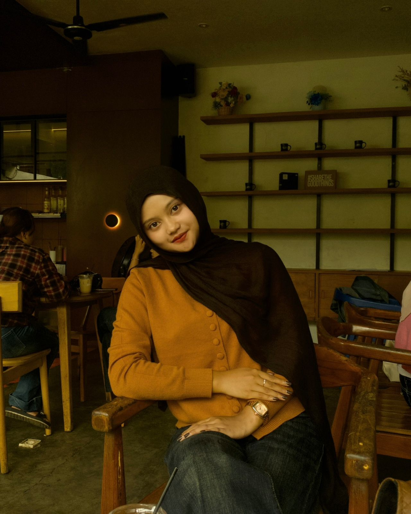
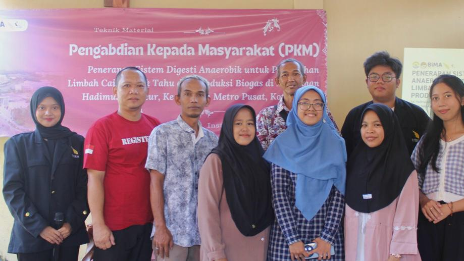

Materials Engineering Student | Institut Teknologi Sumatera
Materials Engineering student at Institut Teknologi Sumatera with a strong interest in material development, sustainability, and engineering applications. Involved in project-based work such as biogas development, demonstrating the ability to apply theoretical knowledge into practical solutions. Known for being adaptable, analytical, and capable of working collaboratively to solve real-world engineering problems
Bachelor’s Degree in Materials Engineering (Undergraduate Student)
2025 – Present

Participated in a renewable energy project focused on biogas development and sustainable solutions. Responsible for assisting in report drafting, presentation preparation, research coordination, and project documentation. This experience enhanced my analytical thinking, teamwork, communication skills, and ability to apply engineering concepts to practical challenges.
Supported the planning and distribution of food and beverages for participants, guests, and committee members during a large-scale graduation event. Coordinated logistics efficiently and ensured all consumption needs were fulfilled on time.
Served as a member of the Event Division for a large-scale graduation celebration. Responsible for planning event activities, preparing detailed schedules and rundowns, coordinating with other divisions, managing participant flow, assisting stage operations, and ensuring each session ran smoothly according to the planned timeline. This experience strengthened my leadership, teamwork, communication, and event management skills in a dynamic environment.
Contributed to the preparation and execution of student gathering activities. Responsible for arranging event schedules, coordinating activity flow, assisting participants, and ensuring every session was conducted according to the planned rundown. This role improved my event management and teamwork abilities.
Handled administrative responsibilities including meeting notes, scheduling, documentation, and communication among committee members. Played an important role in ensuring the event preparation process ran smoothly and efficiently.
Actively participated in educational programs, webinars, discussions, and community initiatives related to legal awareness and human rights. Developed stronger leadership, communication, and public engagement skills through this experience.
Supported the planning and implementation of school anniversary events. Prepared activity rundowns, coordinated with team members, and ensured each event session was executed successfully.
Managed official correspondence, meeting minutes, internal documentation, and administrative records for the student council. This experience built a strong foundation in responsibility, organization, and leadership.
Assisted in documenting school activities through photos, reports, and media content. Helped preserve event records and supported publication needs.
Managed scheduling, administrative records, and communication related to team activities. Supported coordination between members and maintained organized documentation.
Worked as a Data Analyst Staff responsible for managing product and inventory data. Handled product code entry, monitored stock input and output transactions, updated database records, checked data accuracy, and ensured all information was organized systematically. This role improved my analytical thinking, attention to detail, administrative accuracy, and data management skills.
Provided personalized assistance to customers in selecting fashion products that matched their preferences and needs. Managed cashier transactions accurately, maintained attractive store displays, organized stock availability, and supported efficient daily retail operations while delivering excellent customer service.
Through academic activities and hands-on experience in projects and event organization, I have developed a set of technical and professional skills that support effective teamwork and task execution.
Email: yufiraagnimarti@gmail.com
Phone: +62 8587 1738 323
Instagram: @yufirams_
TikTok: @yupayyy
Let's Connect